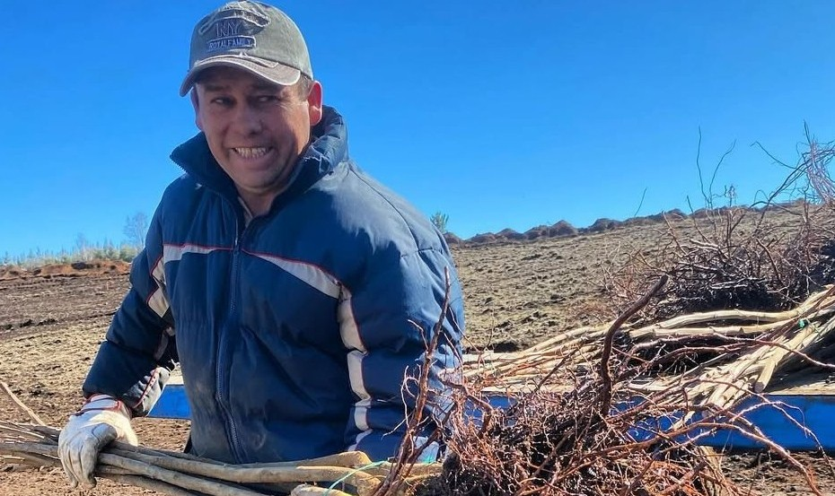

Acompañamiento técnico, de principio a fin
Cada castañar comienza con una buena decisión.
Combinamos experiencia de campo y conocimiento técnico para acompañar tu proyecto en cada etapa.
Cuéntanos tu proyectoUna mirada integral al cultivo
Asesoría integral en cultivo de castaña
No creemos en soluciones genéricas. Visitamos tu predio, escuchamos tus preocupaciones y tus sueños. Juntos diseñamos un plan que respeta tu tierra y tus necesidades reales.
Te ayudamos a entender qué necesita tu suelo, cuándo es el momento perfecto para cada paso, y cómo cuidar tu cultivo de forma inteligente. Estamos contigo para resolver dudas y celebrar tus logros.
Cuando llega la cosecha, sabemos que es el momento más importante para ti. Por eso te guiamos para saber exactamente cuándo cosechar, cómo hacerlo sin dañar el fruto, y cómo conservar esa calidad que trabajaste tanto en lograr.
Compartimos lo que hemos aprendido aquí y en otras regiones. Queremos que crezcas con nosotros, que confíes en nuestro conocimiento y que año a año tu cosecha sea mejor.
Nuestro método
Un proceso pensado para crecer contigo.
Descubre cómo te acompañamos desde el diagnóstico hasta la cosecha, etapa por etapa.

FASE 1Conocemos tu Predio
Nos sentamos contigo para entender tu terreno, tu clima, tus posibilidades. Juntos elegimos las castañas que mejor se adapten a tu realidad y trazamos el camino hacia el éxito.